Industry / 05B
Major hazards,
measured.
When a site holds enough LPG, chlorine or ammonia to hurt the town next door, someone has to say how far the harm could reach and how often. This is the INPRES team that does it, and a small working model of how.
- CIMAH and process safety technical reports
- 180+
- CIMAH jobs on UiTM Expert since 2016
- 75
- National projects reviewed for the DOE as an appointed QRA individual
- 15+
- Years training DOSH officers in QRA, 2016 to 2026
- 10
Figures from Prof. Zulkifli's CV, October 2026, and UiTM Expert.
H-200
Drop a tank anywhere
Pick a substance, set the weather and the people around it. The map redraws the hazard zones, the individual-risk contours and the F-N curve as you go. Click the map to move the tank.
Illustrative · not a study
Results
Societal risk · F-N curve
Event tree
How it is worked out: fireball size and duration from the CCPS correlations, thermal dose to fatality by the Eisenberg probit; explosion by TNT equivalence (3% yield, half the inventory in the cloud) with blast and building-collapse probits; toxic plume as a ground-level Gaussian release with Briggs rural spreads, 10-minute exposure, ERPG levels and CCPS probits. The wind rose is a two-monsoon sketch, not station data. Real studies use site data, validated software such as RiskLynx, and an engineer's judgement. Base maps: Esri World Imagery, CARTO, OpenStreetMap.
H-300
RiskLynx
The demo above is a sketch. RiskLynx is the real thing: browser-based QRA software, registered with MyIPO in 2025 by Prof. Zulkifli. It maps consequence zones and individual and societal risk for any site on Earth, over satellite imagery, with census population data and wind roses from station records.
- CAnConsequence analysis: fire, explosion and toxic zones
- RSA_QRARisk siting: individual and societal risk
- Gas HACZone 0/1/2 to IEC 60079-10-1, Class I to NFPA 497
- Dust HACZone 20/21/22 to IEC 60079-10-2, Class II to NFPA 499
- ExportWhole study to Google Earth (KML)
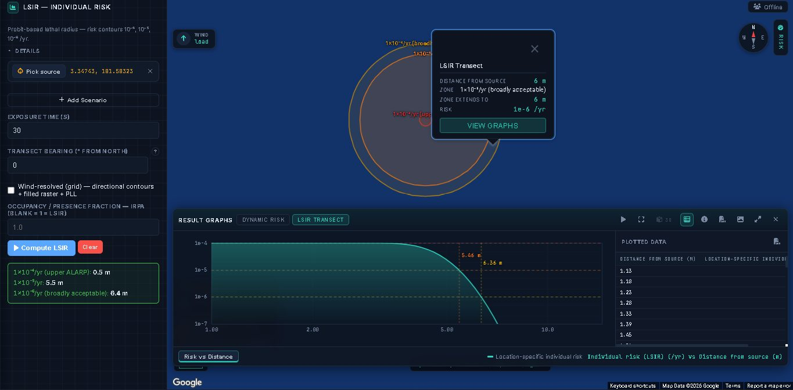
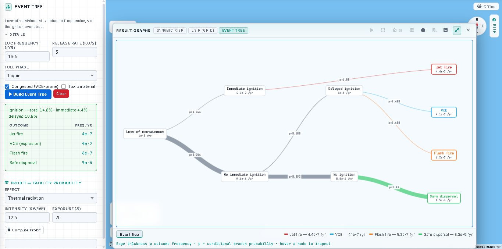
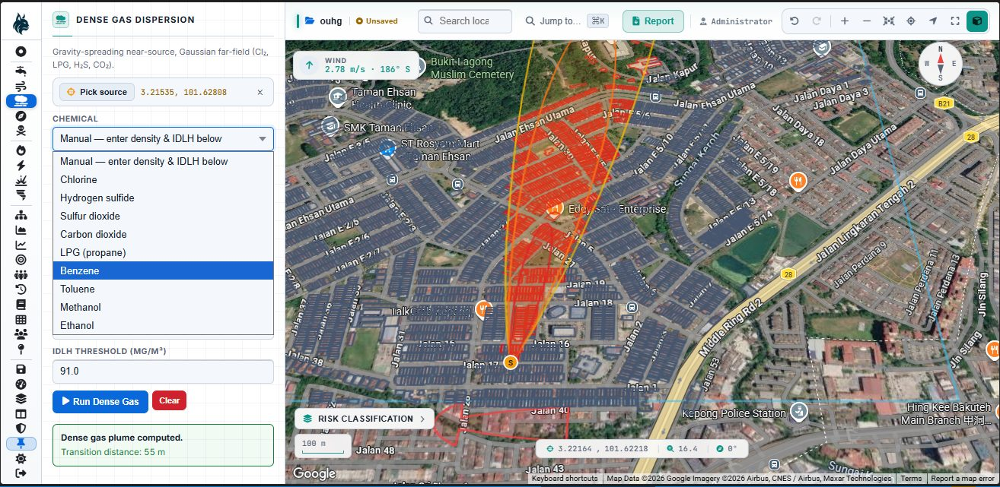
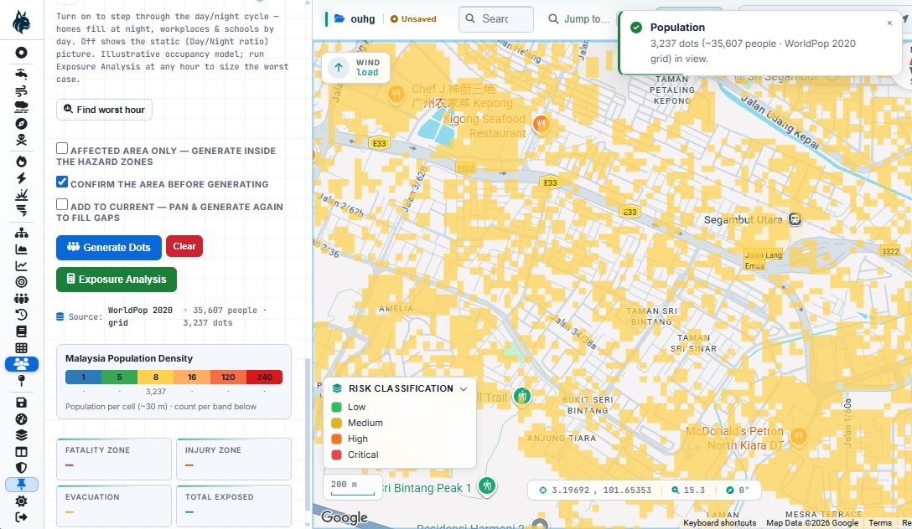
H-400
The team
Two teams, one method. Every report is signed by a registered Professional Engineer; CIMAH reports by a DOSH-registered competent person.
T-01Team 01

Prof. Ir. Dr. Zulkifli Abd Rashid
Team lead · P.Eng, CEng, ACPE, CIMAH competent person (DOSH), SHO (NIOSH)

Assoc. Prof. Ir. Dr. Azil Bahari Alias
Head of INPRES · P.Eng, ACPE
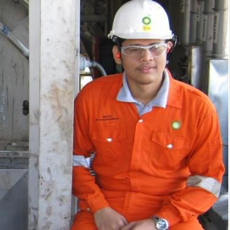
Ts. Ir. Mohd Fazril Irfan Ahmad Fuad
P.Eng, MIChemE, ACPE
Dr Mohd Aizad Ahmad
PhD 2020 on QRA optimisation of a renewable methanol plant
T-02Team 02
Ts. Dr. Safari
Team 02
Ir. Ahmad Yazid Asuat
Lead auditor, RCRA and ATEX
Ir. Azahar
PEPC, MIChemE
Dr Nurul Haiza Sapiee
Team 02
H-500
What we model
Eight ways a plant can hurt people, and the tools to put a distance and a frequency on each.
- VCE
Vapour cloud explosion
Overpressure from a drifting flammable cloud that finds an ignition source.
- BLV
BLEVE and fireball
A pressurised LPG vessel fails in a fire; the contents flash and burn as a ball.
- TOX
Toxic dispersion
Chlorine, ammonia or H2S carried downwind; who breathes how much, for how long.
- JET
Jet fire
A pressurised leak ignites at the hole and burns like a torch.
- POOL
Pool fire
A spilled liquid burns in its bund; heat radiates to tanks and people nearby.
- FLASH
Flash fire
A cloud burns back to its source without blast; anyone inside it is at risk.
- DUST
Dust explosion
Fine combustible dust in a dryer, silo or duct. Zoned under IEC 60079-10-2.
- HAC
Hazardous area classification
Zone 0, 1, 2 for gas and 20, 21, 22 for dust, so the right equipment goes in the right place.
HAZOPHAZIDLOPAProbit analysisFailure frequency analysisLocation-specific individual riskF-N curvesRisk contoursDynamic and Bayesian riskTransport risk on hazmat routesDomino effectsLand-use planning
H-600
Field log
Terminals, fabs, ports and pilot rigs. Tap a photo to enlarge.
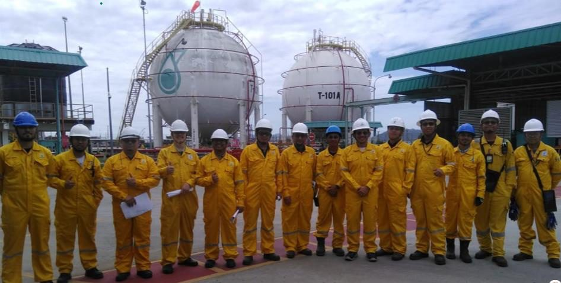
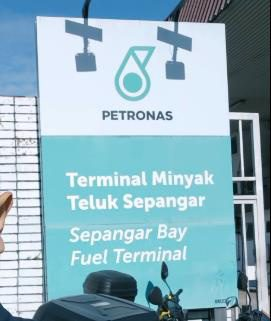
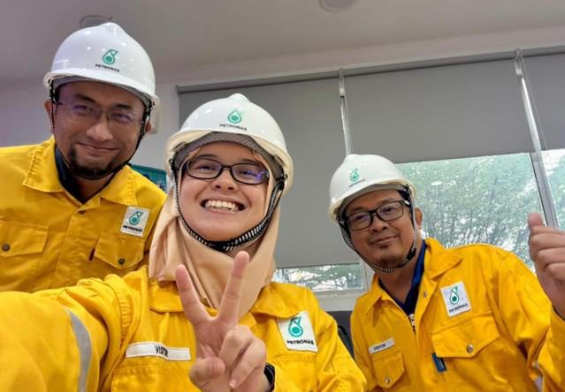
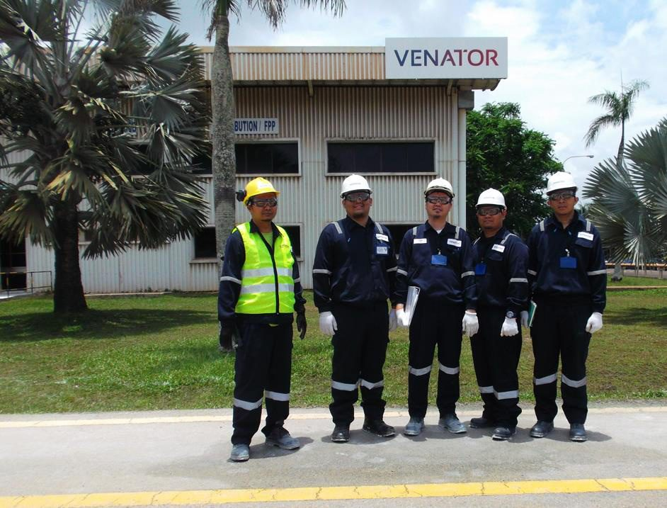
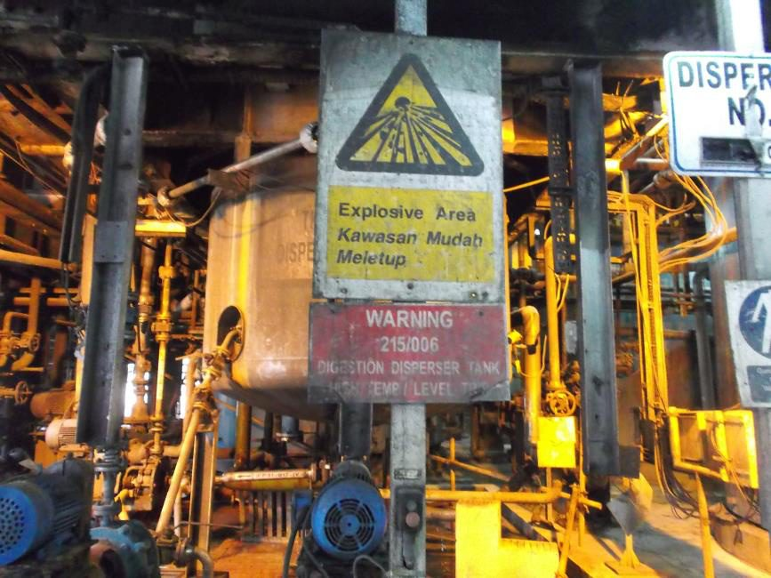
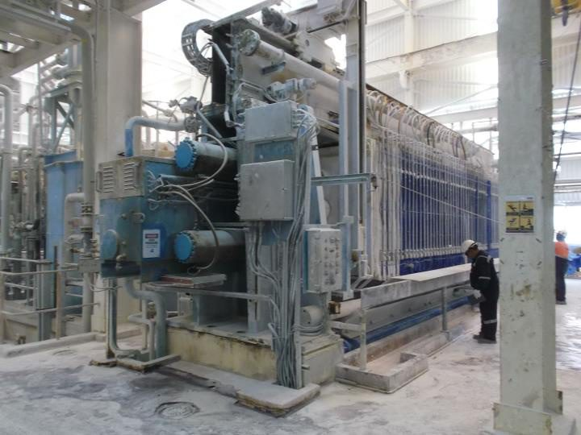
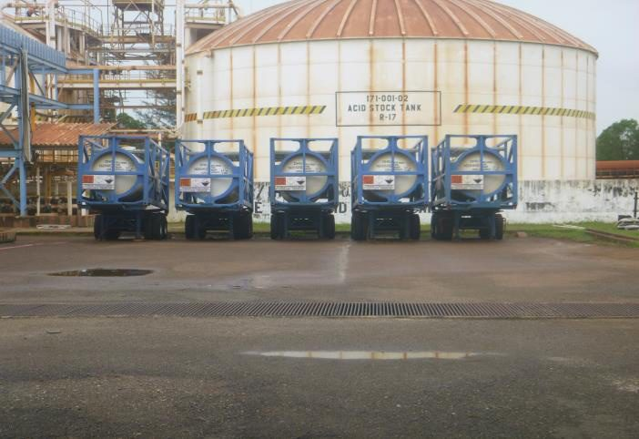
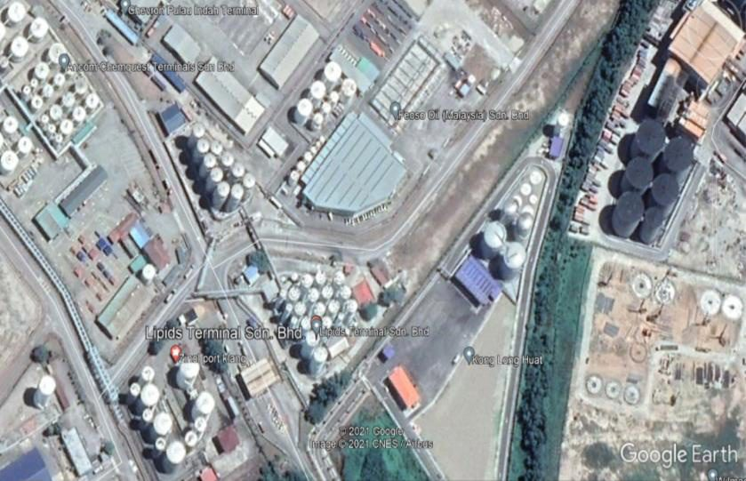
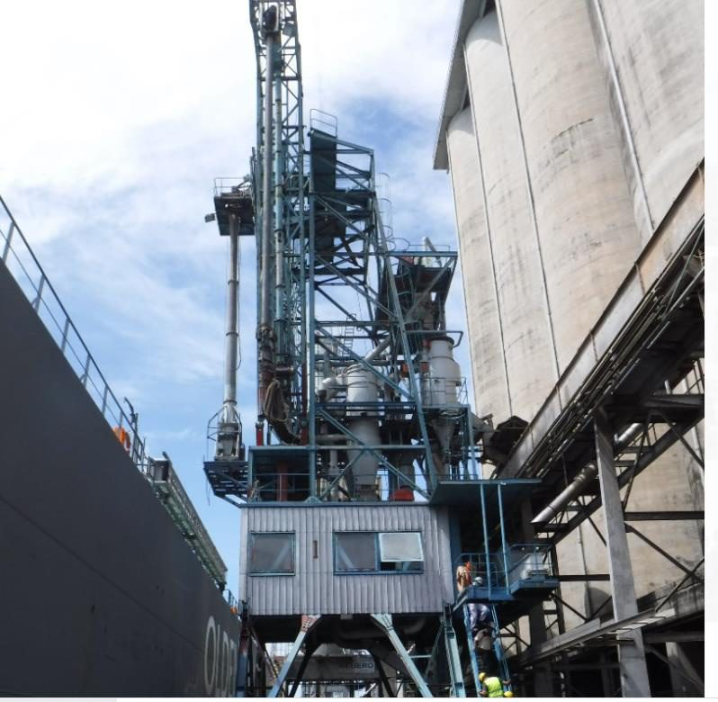
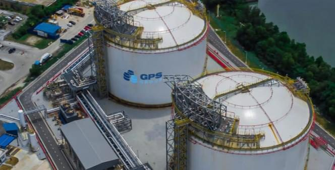
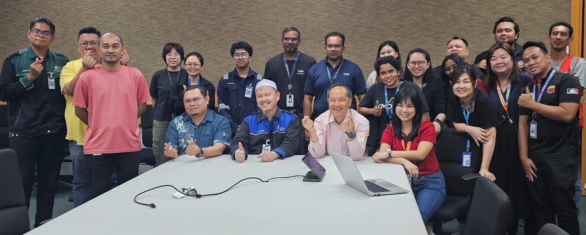
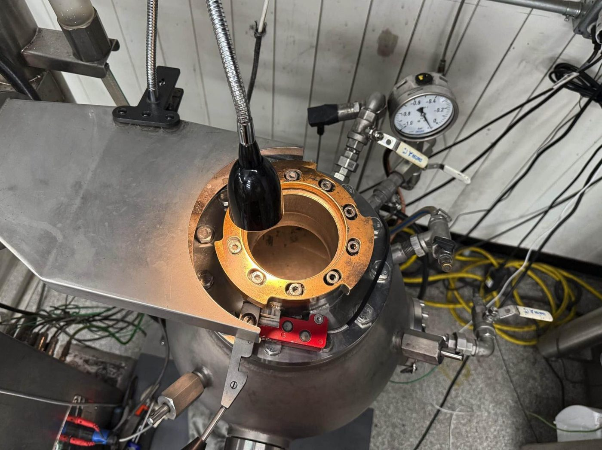
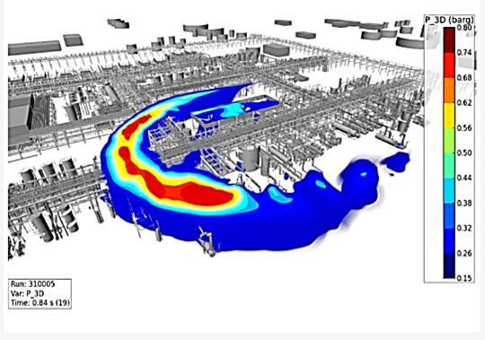
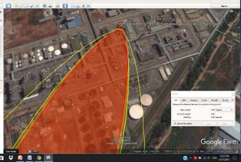
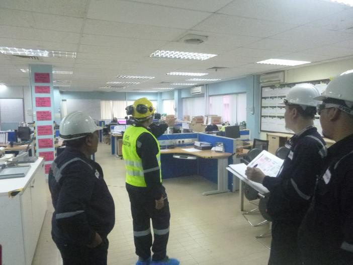
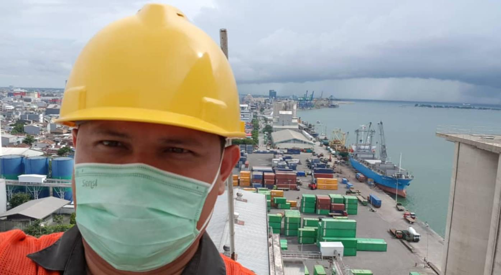
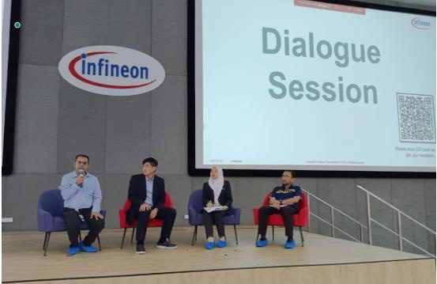
H-700
For the regulator
Prof. Zulkifli is a Department of Environment appointed individual for QRA-specialised EIA reviews, has trained DOSH's petroleum safety division in QRA for major hazard installations since 2016, and helped write DOSH's guideline on site emergency plans for CIMAH installations. He sits on NIOSH's major accident hazard standards committee and was a syllabus panel member for process safety master's programmes at Universiti Malaya and UPM.
Selected DOE QRA and EIA panels
Pengerang Intermediate Chemicals
Acrylonitrile and acetonitrile plant · Pengerang, Johor
Petroluxe Refinery
Oil refinery, 1.2 million tonnes a year · Kuantan, Pahang
ND Paper (Malaysia)
Waste-to-energy plant · Bentong, Pahang
Cypark Smart Technology
Waste-to-energy power plant · Negeri Sembilan
Sultan Idris Shah Green Energy Plant
Green energy plant · Rawang, Selangor
Best Eternity Recycle Technology
Pulp and paper plant expansion · Banting, Selangor
Selekta Spektra
Sustainable sanitary landfill · Lahat, Ipoh
H-800
On air
When something goes wrong at a plant, the newsrooms call. RTM, TV3, BERNAMA, Berita Harian, Harian Metro and The Star have asked the team to explain the risk, including after the Pasir Gudang incident in 2019.
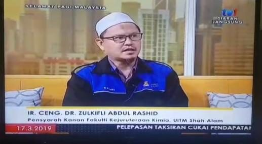
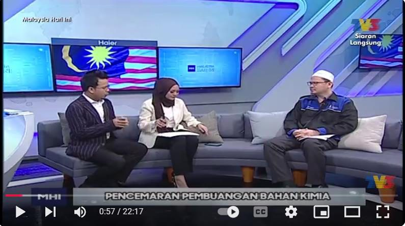
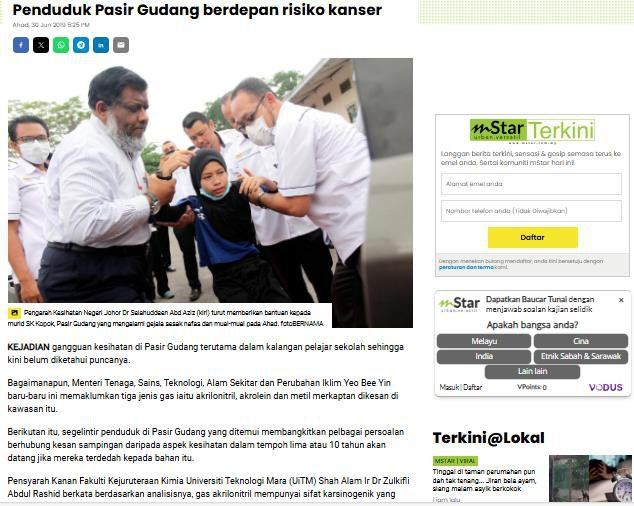
H-900
Software and IP shelf
Tools built in the group, on record with MyIPO. A software licence agreement with Wijati Sdn Bhd, RM 180,000, runs from 2023 to 2026.
- 2025
RiskLynx
QRA mapping of fire, explosion and toxic accidents
Browser-based consequence and risk software. See it below. - 2024
HAZDEX
Hazardous area classification for dust explosive zoning
CRLY2024W06041 - 2023
I-DOSO 1A & 1B
CIMAH training modules
CRLY2023W03603, CRLY2023W03604 - 2022
O-GEL
Ultra sorbent for oil spill clean-up
CRLY2022W04258 - 2016
Hydrogel Charsh
Adsorbent product
Copyright 2016 - 2015
SAVii
Smart VCE identifier tool
ITEX gold medal, KLCC, 2015 to 2016 - 2010
SCIA
GIS software for chemical accident impacts
With Dr M. El-Harbawi, ASCE journal paper, 2010 - 2009
SWSPro
Scheduled waste software
Copyright 2009
H-950
Who we work with
- Memorial University of NewfoundlandProf. Faisal Khan, process safety and risk, since 2014
- King Saud University, RiyadhAssoc. Prof. Dr Mohanad El-Harbawi, since 2014
- Pondicherry University, IndiaProf. S. A. Abbasi, since 2014
- PETRONAS PengerangQRA and CIMAH module development, since 2016
- NIOSH MalaysiaOccupational safety and health research, since 2010
- SGS (Malaysia)Explosion-proof hazardous area classification
Need a CIMAH report, a QRA or a zoning study?
zulkifli466Prof. Ir. Dr. Zulkifli Abd Rashid, team lead. Or start with how a job runs.